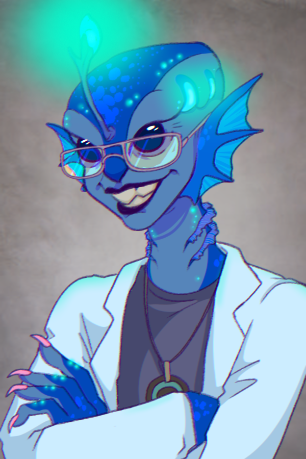
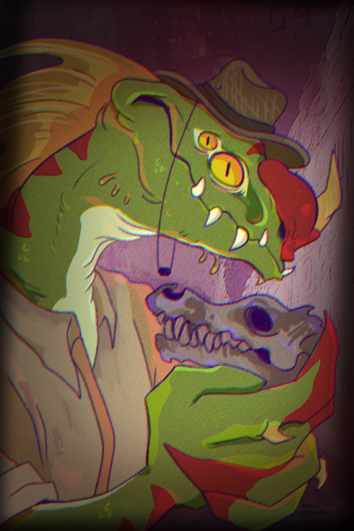
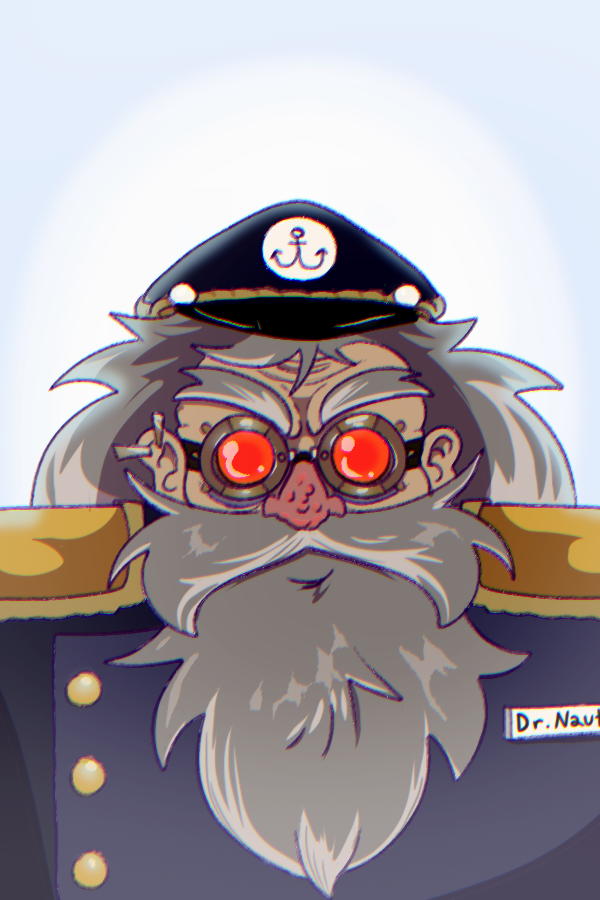

Dr. Lumine Scent
Aquatic Archaeologist
Dr. Lumine Scent is an aquatic archaeologist specializing in submerged ruins and drowned material cultures formed during planetary flooding events. Born in the Mariana Trench, she made her first major discovery as a juvenile when she uncovered pale blue architectural columns concealed within a whale fall. They were later identified as relics of the lost city of Atlantis. She pursued formal training through the Pelagic Institute of Archaeological Sciences, refining her early instincts under mentors specializing in underwater stratigraphy and artifact preservation.
Her work focuses on reconstructing coastal civilizations erased by rising seas, using pressure-sealed excavation methods, sonar mapping, and autonomous submersible drones. Known for her bold yet meticulous field style, Dr. Lumine Scent balances intuitive discovery with rigorous documentation. She believes artifacts carry memory, and that the sea does not destroy history, it archives it. Museum Role: Lead field archaeologist responsible for submerged collections, overseeing excavation missions and curating artifacts recovered from ancient seabeds and flooded coastlines. Special Considerations: As a fish-like humanoid native to deep-sea environments, Dr. Scent brings an embodied understanding of aquatic spaces rarely accessible to surface researchers, allowing her to challenge traditional land-centric archaeological assumptions.

Professor Leviathan
Marine Anthropologist
Professor Leviathan is a marine anthropologist whose research centers on the biological and cultural evolution of aquatic and amphibious societies. He earned his doctorate in Aquatic Anthropology from Harvard University in 2002, where he focused on comparative morphology and ritual behavior among coastal populations. His work combines osteological analysis, genetic sampling, and ethnographic study to trace how environmental anomalies reshaped bodies, labor, and belief systems.
While collaborating with Dr. Lumine Scent, he identified the fossilized remains of an ancient marine creature later confirmed as the evolutionary ancestor of a widely used aquatic working dog species. Methodical and ethically driven, Professor Leviathan approaches remains with caution, emphasizing respect for sentient and near-sentient lifeforms. He often questions whether scientific discovery justifies public display. Museum Role: Oversees the study of biological remains, advises on ethical handling of specimens, and contributes evolutionary context to museum exhibits involving humanoid and non-human ancestors. Special Considerations: Professor Leviathan is a leading advocate for revised museum ethics in anomalous worlds, frequently pushing back against exhibition practices that risk treating living cultures as extinct curiosities.

Dr. Nautilus
Cultural Interpreter
Dr. Nautilus is a cultural interpreter and mythographer dedicated to translating fragmented evidence into living narratives. Before joining the museum, he spent decades as a decorated sailor and independent captain, navigating anomaly-dense waters and encountering civilizations absent from official maps. His academic background blends cultural history, comparative mythology, and decolonial museology, shaping an interpretive lens that prioritizes story over certainty.
Dr. Nautilus works closely with artifacts recovered by the Gathering Team, weaving rituals, migration patterns, and belief systems from material fragments and oral traditions. He frequently collaborates with artists to create immersive, multisensory exhibits. A thoughtful provocateur, he reminds colleagues that museums do not preserve truth, they negotiate it. Interpretive Method: Synthesizes archaeological evidence, anthropological data, oral histories, and simulated reconstructions to explore multiple meanings rather than a single authoritative narrative. Special Considerations: Dr. Nautilus openly questions institutional ownership of culture, advocating for repatriation, shared stewardship, and exhibits that acknowledge uncertainty.